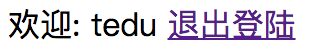

《Django Web框架教学笔记》
- 讲师: 魏明择
- 时间: 2019
目录
session 会话控制
什么是session
session又名会话控制，是在服务器上开辟一段空间用于保留浏览器和服务器交互时的重要数据
session的起源
- http协议是无状态的：每次请求都是一次新的请求，不会记得之前通信的状态
- 实现状态保持的方式：在客户端或服务器端存储与会话有关的数据
- 推荐使用sesison方式，所有数据存储在服务器端
实现方式
- 使用 session 需要在浏览器客户端启动 cookie，且用在cookie中存储sessionid
- 每个客户端都可以在服务器端有一个独立的Session
- 注意：不同的请求者之间不会共享这个数据，与请求者一一对应
Django启用Session
在 settings.py 文件中
向 INSTALLED_APPS 列表中添加：
INSTALLED_APPS = [# 启用 sessions 应用'django.contrib.sessions',]向 MIDDLEWARE_CLASSES 列表中添加：
xxxxxxxxxxMIDDLEWARE = [# 启用 Session 中间件'django.contrib.sessions.middleware.SessionMiddleware',]
session的基本操作:
- session对于象是一个在似于字典的SessionStore类型的对象, 可以用类拟于字典的方式进行操作
- session 只能够存储能够序列化的数据,如字典，列表等。
保存 session 的值到服务器
request.session['KEY'] = VALUE
获取session的值
VALUE = request.session['KEY']VALUE = request.session.get('KEY', 缺省值)
删除session的值
del request.session['KEY']
在 settings.py 中有关 session 的设置
SESSION_COOKIE_AGE
- 作用: 指定sessionid在cookies中的保存时长(默认是2周)，如下:
SESSION_COOKIE_AGE = 60 * 60 * 24 * 7 * 2
SESSION_EXPIRE_AT_BROWSER_CLOSE = True 设置只要浏览器关闭时,session就失效(默认为False)
session 缺省配置
模块
import django.conf.global_settings
注: 当使用session时需要迁移数据库,否则会出现错误
xxxxxxxxxx$ python3 manage.py makemigrations$ python3 manage.py migrate
用户登陆逻辑处理
当用户登陆时，可以在session添加一个键 'user' 绑定一个当前登陆用户的信息，如果在
'user' in request.session成立，即当前用户为登陆状态，可以从request.session['user']获限登陆信息。否则为没有登陆状态登陆逻辑处理
检查用户和密码是否是合法用户
如果是合法用户，在当前用户的session记录
xxxxxxxxxx# 在session内保存当前用的名称和idrequest.session['user'] = {'user': 'tedu','id': 1}# 注： 没有登陆的用户 request.session['user'] 不存在
退出登陆的逻辑处理
退出登陆时，删除session['user']
xxxxxxxxxxif 'user' in request.session:del request.session['user']
判断用户是否登陆:
xxxxxxxxxxif 'user' in request.session:... 当前用户登陆中else:... 没有登陆练习:
实现用户登陆、退出功能
说明:
- 如果用户输入的登陆数据合法，则在session['user']内记录一个已经登陆的用户状态
要求 ：
创建一个 user 应用 实现用户登陆,注册，退出登陆的逻辑
python3 manage.py startapp user
创建一个 index 应用 实现用户主页
python3 manage.py startapp index
模型类
用户模型类
xclass User(models.Model):username = models.CharField("用户名", max_length=30, unique=True)password = models.CharField("密码", max_length=30)def __str__(self):return "用户" + self.username
登陆设计规范(在user应用中写代码)
路由正则 视图函数 模板位置 说明 /user/login def login_view(request): templates/user/login.html 用户登陆 /user/logout def logout_view(request 无 退出用户登陆 主页设计规范(在index应用中写代码)
路由正则 视图函数 模板位置 说明 / def index_view(request): templates/index/index.html 主页 界面参考:
登陆界面
注册界面
主页
登陆前
登陆后
- 


中间件 Middleware
中间件是 Django 请求/响应处理的钩子框架。它是一个轻量级的、低级的“插件”系统，用于全局改变 Django 的输入或输出。
每个中间件组件负责做一些特定的功能。例如，Django 包含一个中间件组件 AuthenticationMiddleware，它使用会话将用户与请求关联起来。
他的文档解释了中间件是如何工作的，如何激活中间件，以及如何编写自己的中间件。Django 具有一些内置的中间件，你可以直接使用。它们被记录在 built-in middleware reference 中。
中间件类:
中间件类须继承自
django.utils.deprecation.MiddlewareMixin类中间件类须实现下列五个方法中的一个或多个:
def process_request(self, request):执行视图之前被调用，在每个请求上调用，返回None或HttpResponse对象def process_view(self, request, callback, callback_args, callback_kwargs):调用视图之前被调用，在每个请求上调用，返回None或HttpResponse对象def process_response(self, request, response):所有响应返回浏览器之前被调用，在每个请求上调用，返回HttpResponse对象def process_exception(self, request, exception):当处理过程中抛出异常时调用，返回一个HttpResponse对象def process_template_response(self, request, response):在视图刚好执行完毕之后被调用，在每个请求上调用，返回实现了render方法的响应对象
注： 中间件中的大多数方法在返回None时表示忽略当前操作进入下一项事件，当返回HttpResponese对象时表示此请求结果，直接返回给客户端
编写中间件类:
xxxxxxxxxx# file : middleware/mymiddleware.pyfrom django.http import HttpResponse, Http404from django.utils.deprecation import MiddlewareMixinclass MyMiddleWare(MiddlewareMixin): def process_request(self, request): print("中间件方法 process_request 被调用") def process_view(self, request, callback, callback_args, callback_kwargs): print("中间件方法 process_view 被调用") def process_response(self, request, response): print("中间件方法 process_response 被调用") return response def process_exception(self, request, exception): print("中间件方法 process_exception 被调用") def process_template_response(self, request, response): print("中间件方法 process_template_response 被调用") return response- 注册中间件:
xxxxxxxxxx# file : settings.pyMIDDLEWARE = [ ... 'middleware.mymiddleware.MyMiddleWare',]中间件的执行过程

练习
用中间件实现强制某个IP地址只能向/test 发送一次GET请求
提示:
- request.META['REMOTE_ADDR'] 可以得到远程客户端的IP地址
- request.path_info 可以得到客户端访问的GET请求路由信息
答案:
xxxxxxxxxxfrom django.http import HttpResponse, Http404from django.utils.deprecation import MiddlewareMixinimport reclass VisitLimit(MiddlewareMixin):'''此中间件限制一个IP地址对应的访问/user/login 的次数不能改过10次,超过后禁止使用'''visit_times = {} # 此字典用于记录客户端IP地址有访问次数def process_request(self, request):ip_address = request.META['REMOTE_ADDR'] # 得到IP地址if not re.match('^/test', request.path_info):returntimes = self.visit_times.get(ip_address, 0)print("IP:", ip_address, '已经访问过', times, '次!:', request.path_info)self.visit_times[ip_address] = times + 1if times < 5:returnreturn HttpResponse('你已经访问过' + str(times) + '次，您被禁止了')
跨站请求伪造保护 CSRF
跨站请求伪造攻击
- 某些恶意网站上包含链接、表单按钮或者JavaScript，它们会利用登录过的用户在浏览器中的认证信息试图在你的网站上完成某些操作，这就是跨站请求伪造。
CSRF
xxxxxxxxxxCross-Site Request Forgey跨 站点 请求 伪装说明:
- CSRF中间件和模板标签提供对跨站请求伪造简单易用的防护。
作用:
- 不让其它表单提交到此 Django 服务器
解决方案:
取消 csrf 验证(不推荐)
- 删除 settings.py 中 MIDDLEWARE 中的
django.middleware.csrf.CsrfViewMiddleware的中间件
- 删除 settings.py 中 MIDDLEWARE 中的
通过验证 csrf_token 验证
xxxxxxxxxx需要在表单中增加一个标签{% csrf_token %}